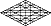

שהם
onyx

blanched, whitened.
compare, Moses hcm; HaShem mch;
Shammah hmc; Shoham mhc.
Black onyx is a compound that absorbs much of light's visible spectrum;
nevertheless, it’s unable to prevent a pale gleam of that light from escaping
its surface. This phenomenon is instructive of the process of crowning:
of experiencing moments of great clarity and understanding on the path
to enlightenment, moments that are often followed by forgetful
confusion. One can absorb insight after promising insight with little
change, but the hint of a smile impresses itself upon the aura despite frustration.
Here and there, by little hints, insights may
amount
to nothing, much; but nevertheless, the mind, in its struggles with
nuance, continues to absorb and collate, to compare and categorize. As
understanding builds beneath surface thought, shimmering concepts
absently bundled together and nearly forgotten begin to coalesce; and
their cohesion lights the way forward on the path of discovery.
The Holy Fire of HaShem c radiates h from within everyone m. We delude ourselves if we search for its faces in isolation, one from another, exhausting ourselves by analyzing c scraps h of information that come our way, while remaining ignorant of the whole m. We expose our lack of faith by feeding the vain hope of discovering—no, of capturing as our own—the timeless Eternal One within a fixed instant.
The goodness of God’s Wisdom c is
absorbed in the course of our lives h as
we reflect upon its attributes m as
revealed in the things that are made. In his mercy, the Father has
chosen our delusions. In spite of the presumptions of any or all of us,
the understandings that are crystallizing within each of us are holy tapestries
being woven with threads of Wisdom c,
because enlightenment h is
our common destiny m.
Gematria 345
hmc:
Wisdom’s c projection
from within the whole of humanity
m by
means of the Life shared by us all is the enlightenment h.
Ordinal
39
fl
>
12
by
>
3
g:
An elder l who
is self-absorbed f deprives y
his household b of
continuity g.
Targum: If
Wisdom's c light h is
given free reign m,
it will stimulate c vision h within
everyone m.
| Nod | ||
|
site |
TrueType Font | bookmenu |